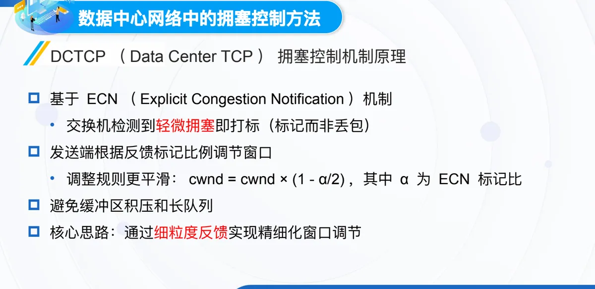
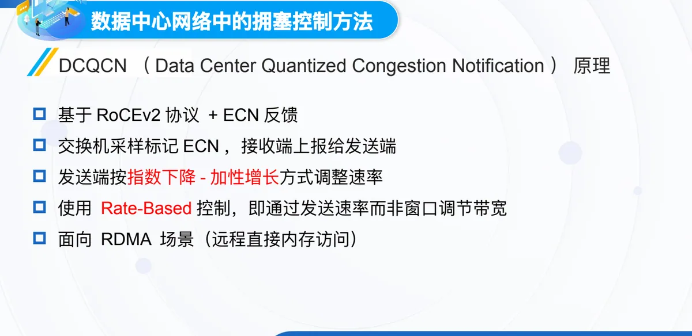
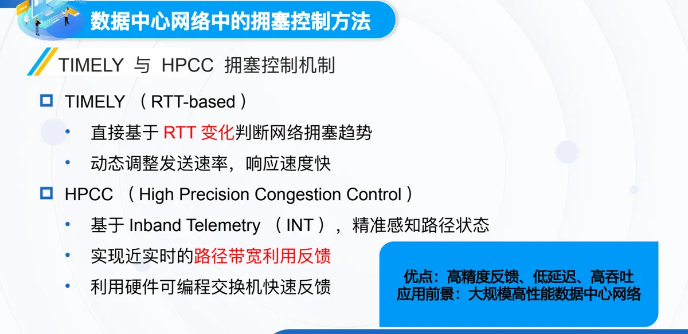

计算机通信与网络 · 第二版讲义 · 第 6 章 网络中的拥塞控制
6.6 数据中心网络中的拥塞控制
数据中心网络的链路速率高（10G/25G/100G）、RTT 极小（< 1 ms），拥塞往往在瞬间形成，前面讲的传统 TCP 机制在这里会失灵。本节先给流量分类、看拥塞的特点，再依次介绍 DCTCP、DCQCN、TIMELY 与 HPCC 四种机制，最后收拢全章脉络。
1. 数据中心里的三类数据流
课件按体量与时效要求，把数据中心的流量分成三类。
- 查询流 Query Flows：多为小流量、延迟敏感，典型场景是在线搜索与分布式数据库查询，要求低延迟、高响应速度；
- 短流 Short Flows：包含查询流，通常几十 KB 到几 MB，多数需要「抢占先发」，即尽早被调度、尽早完成；
- 长流 Long Flows：体量大、持续时间长，如数据备份与分布式训练，要求高吞吐率。
短流求快、长流求带宽，机制必须兼顾两头。
2. 数据中心拥塞的特点与两处挑战
数据中心链路的传输速率很高（10G/25G/100G），RTT 却极小（< 1 ms），两者叠加使拥塞传播速度快、往往瞬间形成；触发它的通常不是持续过载，而是瞬时突发流量，例如同步请求与任务分发。
传统 TCP 在这里有两处不足：一是对 RTT 变化不敏感、反应慢，RTT 本就很小，靠它的变化推断拥塞既迟钝又不准；二是基于丢包的控制易导致队列积压与尾部丢包，要等缓冲被填满、报文开始被丢弃才减窗，队列后面的报文成批丢掉，短流完成时间随之被拖长。
3. DCTCP：用 ECN 做细粒度的窗口调节
第一个方案是数据中心 TCP DCTCP（Data Center TCP），它以 6.3 节讲过的显式拥塞通知 ECN（Explicit Congestion Notification）为基础：交换机检测到轻微拥塞就给报文打标记，而不是等缓冲溢出再丢包；标记经接收端反馈回发送端，发送端按被标记报文的比例调节拥塞窗口，规则是：
cwnd = cwnd × (1 - α/2)
式中 α 为 ECN 标记比。与传统「丢包就把窗口减半」的做法相比，这里的收缩幅度由 α 决定：标记比很小时窗口只略微下调，因此更平滑。这样便避免了缓冲区积压和长队列，核心思路即通过细粒度反馈实现精细化窗口调节。

（1）相对传统 TCP 的优势
- 降低队列积压，从而减少尾部丢包；
- 显著改善短流延迟；
- 提高拥塞控制的灵敏性与稳定性；
- 适合低延迟、高速连接的封闭网络环境，适用场景是数据中心内部封闭网络，前提是全路径支持 ECN。
4. DCQCN：面向 RDMA 的速率控制
第二个方案是 DCQCN（Data Center Quantized Congestion Notification），面向远程直接内存访问 RDMA（Remote Direct Memory Access）场景，建立在 RoCEv2 协议与 ECN 反馈之上：交换机采样并标记 ECN，接收端把标记情况上报给发送端，发送端按指数下降-加性增长调整速率，拥塞时快速下调、空闲时缓慢回升。它与 DCTCP 最根本的区别是采用 Rate-Based 控制，即直接控制发送速率而不是通过窗口间接影响发送；这一「增得慢、减得快」的思路与 6.4 节 TCP 一致。

（1）DCQCN 的优势
- 与 RoCE 兼容，适用于 RDMA 通信；
- 比 DCTCP 更适合无损网络架构（如 InfiniBand）；
- 更精细的速率控制，改善链路利用率与稳定性；
- 支持硬件加速实现，延迟更低。
5. TIMELY 与 HPCC：换一种信号感知拥塞
TIMELY（RTT-based）直接根据 RTT 变化判断拥塞趋势并动态调整发送速率，响应快，不依赖交换机额外打标；HPCC（High Precision Congestion Control）借助带内遥测 INT（Inband Telemetry），由交换机把路径状态随数据包带回，精准感知路径状态、实现近实时的带宽利用反馈，并利用硬件可编程交换机快速反馈。两者共同的优点是高精度反馈、低延迟、高吞吐，面向大规模高性能数据中心网络。

本章要点回顾
课件把全章收成四条线索：6.1 节讲拥塞现象与定义；6.2 节讲基本方法，用「开环与闭环」「端到端与网络辅助」「拥塞避免与拥塞控制」三组概念给出分类坐标；6.3 节讲路由器队列管理，被动管理是 FIFO 与 FQ，主动管理是 RED、DECbit 与 ECN，而 ECN 正是数据中心机制的起点；6.4 节与 6.5 节讲 TCP 拥塞控制，从 Reno 的基本四过程与 NewReno，到 Vegas 的延迟预测，再到 CUBIC、BBR，最后延伸到数据中心里的 DCTCP、DCQCN、TIMELY 与 HPCC。
主线其实是一个问题：在哪里、用什么信号发现拥塞。丢包最粗，时延稍细，ECN 标记更细，带内遥测把路径状态直接带回来——信号越精细，控制越精确，要求也越高。
本节小结
- 数据流分三类：查询流小流量、延迟敏感，短流多需抢占先发，长流体量大、持续久，要求高吞吐率；
- 数据中心拥塞因链路速率高、RTT 极小（< 1 ms）而瞬间形成，多由瞬时突发引起；传统 TCP 对 RTT 变化不敏感，基于丢包又带来队列积压与尾部丢包；
- DCTCP 用 ECN 做细粒度窗口调节，按 cwnd = cwnd × (1 - α/2) 平滑收缩，改善短流延迟，适用于全路径支持 ECN 的封闭网络；
- DCQCN 面向 RDMA，基于 RoCEv2 与 ECN 反馈，按指数下降-加性增长调整速率，用 Rate-Based 控制，更适合 InfiniBand 这类无损网络架构；
- TIMELY 依 RTT 变化判断拥塞趋势，HPCC 用带内遥测 INT 精准反馈路径状态，共同追求高精度、低延迟与高吞吐。